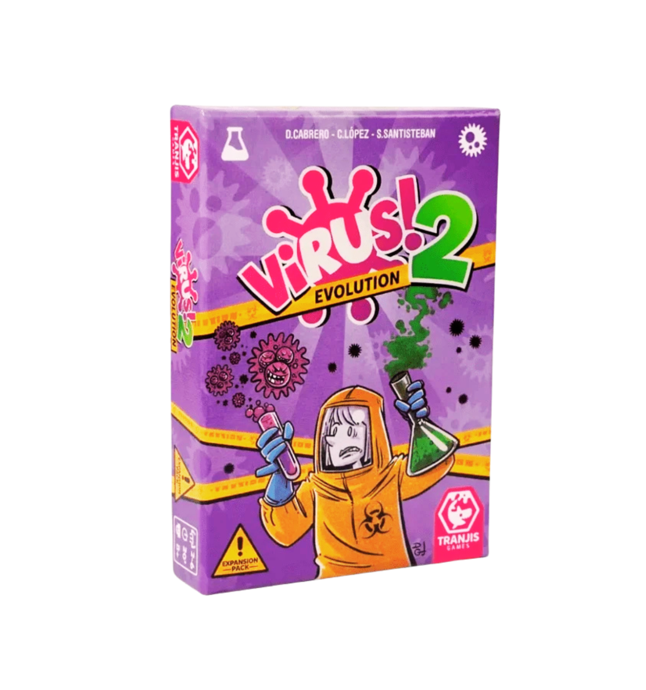
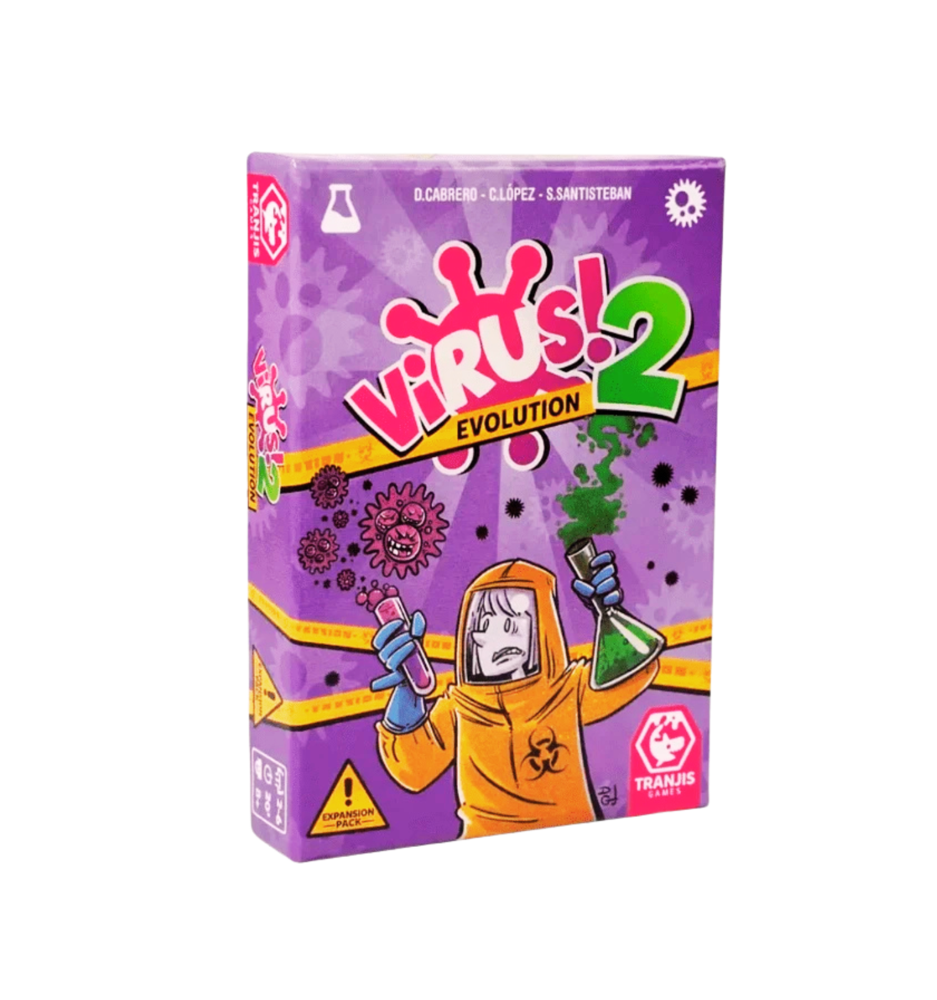

Els Orígens
Virus! va néixer d’una idea senzilla al any 2022: crear un joc de cartes amb estratègia, humor i diversió per a totes les edats. L’objectiu era combinar la temàtica de virus i òrgans amb mecàniques fàcils d’aprendre però profundes, fomentant el pensament tàctic i la interacció entre jugadors.
Primers Personatges
Els primers personatges eren virus i òrgans molt simples, inspirats en dibuixos animats clàssics. Amb el temps, els personatges van evolucionar cap a un estil més colorit, expressiu i simpàtic, amb ulls grans i expressions que transmeten emoció. Això va permetre que els jugadors es connectessin emocionalment amb el joc.
El Llançament
Després de mesos de proves i ajustos, Virus! es va llançar oficialment a l'any 2023. Les primeres edicions van ser rebudes amb entusiasme, destacant la combinació d’estratègia, humor i disseny visual atractiu. Des del seu llançament, el joc ha anat ampliant-se amb noves cartes, personatges i esdeveniments especials.